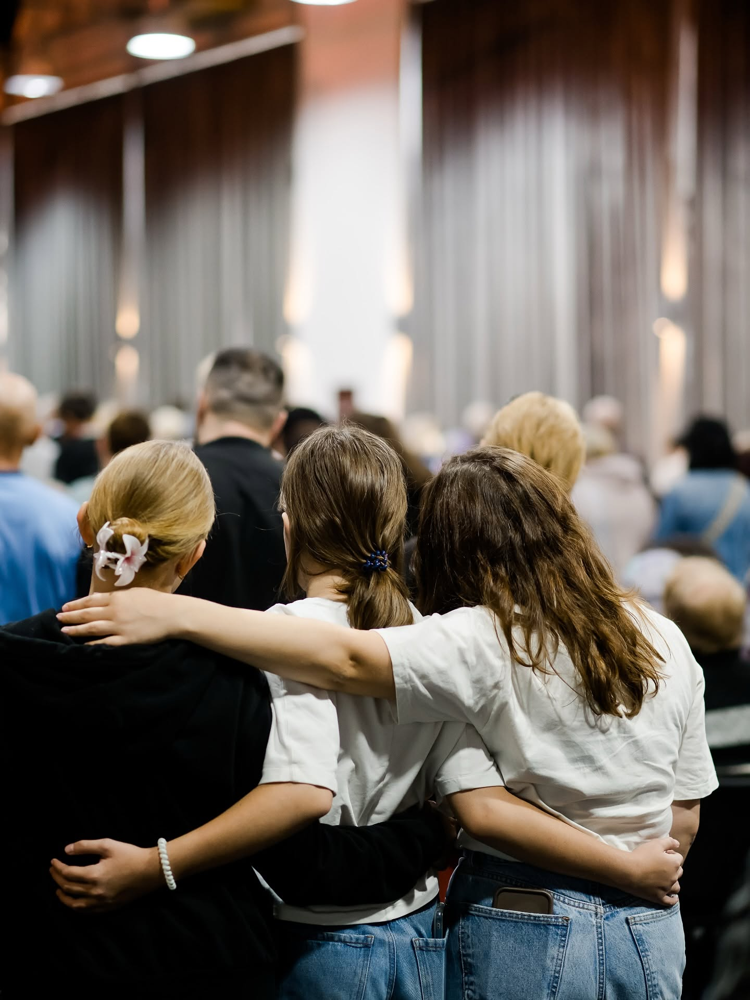

«Прийдіть до Мене всі втомлені й обтяжені,
і Я вас заспокою.» Матвія 11:28
Ніяких дрескодів і обов'язкових ритуалів. Прийди як є — тебе зустрінуть і покажуть де що.
«Бо ви спасені благодаттю через віру. І це не від вас, це — Божий дар.»Єфесян 2:8
Ми — євангельська церква в Дніпрі, яка вірить: Бог змінює людей не за заслуги, а за благодаттю. Тут немає ідеальних. Тут є ті, хто йде — зі своїми сумнівами, болями та надіями.
Ми покликані пізнавати, прославляти і любити Ісуса Христа — і допомагати кожній людині зробити крок назустріч Йому. Незалежно від того, з якого дна вона починає.
Найбільша новина, яку світ коли-небудь чув. Не набір правил — а живі стосунки з Богом.
Ми ростемо разом — у малих групах, в служінні, в буденному житті поряд один з одним.
Кожен з нас покликаний свідчити про те, що Бог зробив в його житті. Словом і вчинком.
Реабцентр, підтримка людей у кризі. Бо «Слово стало тілом» — і ми хочемо бути руками Христа.
Вісім різних спільнот всередині однієї церкви — для кожного покоління і кожного етапу життя.
«Не покидаймо свого зібрання, як дехто має звичку, а навпаки — будьмо натхненням один для одного.» Євреїв 10:25
Пісні, читання Слова, проповідь. І той особливий час спілкування, який починається вже після — і часом триває довше за саму службу.
Живе, щире середовище для підлітків. Де можна бути собою.
Молодь, яка пливе не за течією — і знає чому.
Перша субота місяця. Книги, відверті розмови, кава і простір бути почутою.
Читаємо, обговорюємо, застосовуємо. Книга за книгою — міняємо себе і свої сім'ї.
Біблійні заняття, ігри, пісні. Поки батьки на службі — діти теж на своєму місці.
Футбол, настолки, активні ігри на свіжому повітрі. Для дітей 8–12 років — субота 11:00. Для підлітків 12–18 — неділя 15:00.
Наші записи — слухайте, співайте, беріть із собою. Музика, яка народилася в цих стінах.

Центр реабілітації «Ковчег» — це місце, де люди, залежні від наркотиків і алкоголю, знаходять справжню свободу. Без засудження. Без формальностей. Тільки реальна підтримка — і Той, Хто справді може звільнити.
«Якщо Син освободить вас — справді вільними будете.»Іван 8:36
«Сім років я думав, що виходу немає. У «Ковчегу» я вперше побачив людей, які пройшли те саме — і живуть. Мирно. Тверезо. З Богом. І я зміг.»
Не рядок у бюджеті, не галочка в чекліcті — а вираз довіри.
Бог бачить не суму, а серце.